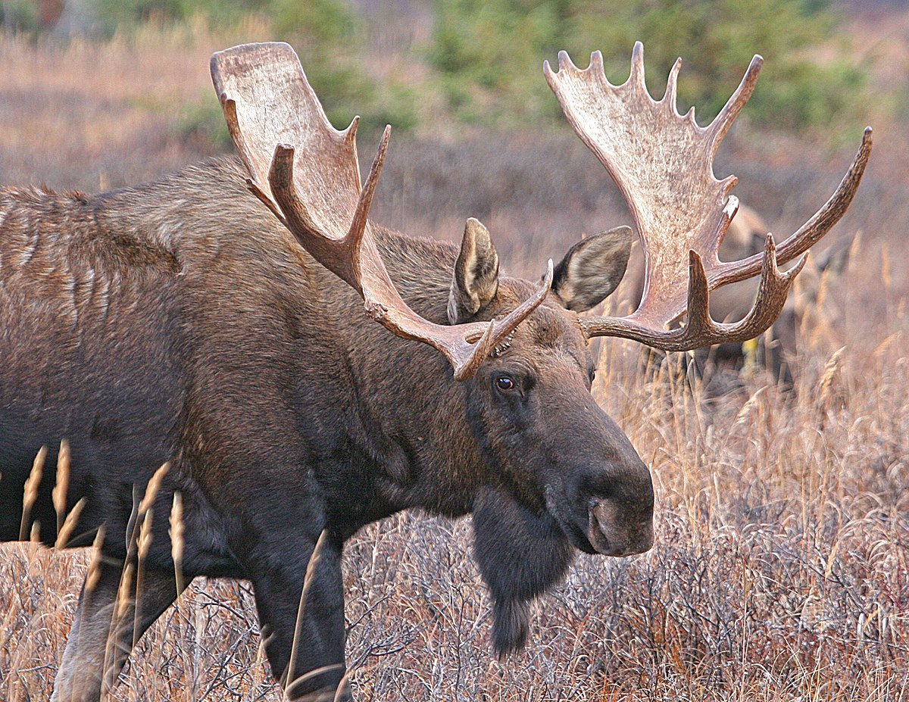

Chocolate Moose Recipe

Description
This delectable desert takes some time to prepare, but it's
well worth the effort. Your taste buds, along with everyone
you serve it to, will thank you.
Ingredients
- 40 lbs milk chocolate
- 17 containers of Cool Whip
- 1 large adult moose
- 1 cherry
Steps
- Send your spouse, significant other, or even your younger
sibling (if you're in a pinch) to Alaska to hunt and
capture a moose.
- While they're doing this, start melting the milk chocolate
in the largest doubel boiler you can find.
- Once the chocolate is melted, turn down the heat and just
keep it warm.
- Tie the moose's legs together with a rope.
- Holding the moose by the tail, carefully dip it in the
melted chocolate, covering it completely.
- Set the moose on a large platter and refrigerator for
several days until the chocolate is set.
- Remove the rope and return it to the shed.
- Top the chocolate moose with Cool Whip and garnish with
a cherry.
- Bon apetit.